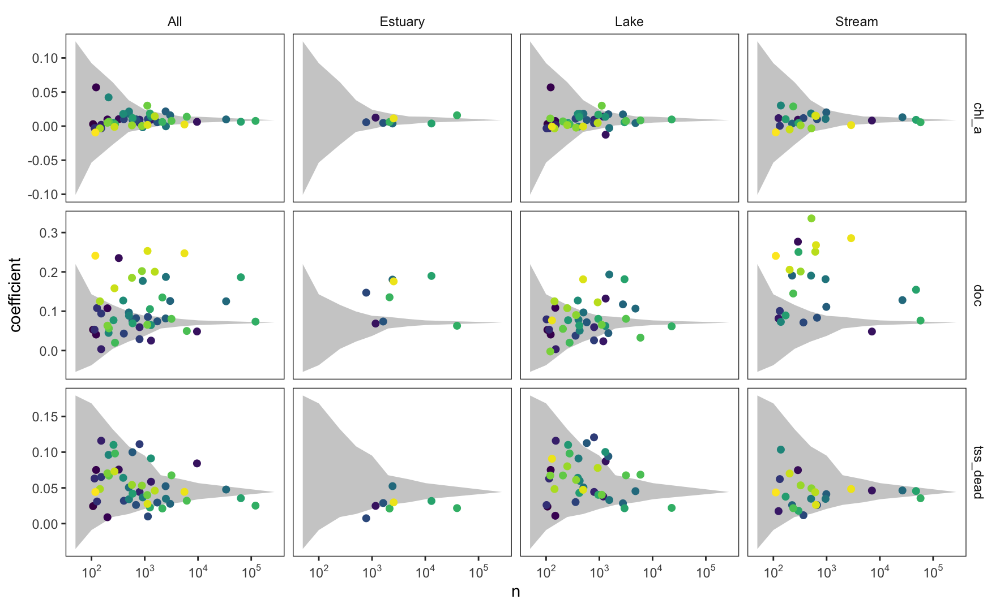

Section 7 Coefficient Stability & Sample-Size Convergence (Fig. S1)
To evaluate whether between-ecoregion differences in specific attenuation coefficients (\(\alpha_{\text{NAP}}, \alpha_{\text{DOC}}, \alpha_{\text{Chl }a}\)) reflect genuine regional biogeochemical variation rather than finite-sample estimation noise, the 277,382 training observations are randomly partitioned into \(G\) subsets of varying sample size (\(n/50, n/100, \dots, n/10{,}000\), plus \(G=1\)). The three-constituent model is fitted within each random subset across 10 independent Monte Carlo replicates (random_subset_coefs() in R/models.R).
rand <- get_random_subsets()
rand %>% count(each_group, name = 'Total coefficient estimates (3 terms × G groups × 10 reps)') %>%
mutate(across(everything(), fmt_n)) %>%
kable(col.names = c('Random Subset Sample Size (n)', 'Monte Carlo Parameter Estimates')) %>%
kable_styling(bootstrap_options = c('condensed', 'striped'), full_width = FALSE)| Random Subset Sample Size (n) | Monte Carlo Parameter Estimates |
|---|---|
| 50 | 166,440 |
| 100 | 83,220 |
| 250 | 33,300 |
| 500 | 16,650 |
| 1,001 | 8,310 |
| 1,996 | 4,170 |
| 5,043 | 1,650 |
| 9,906 | 840 |
| 277,382 | 30 |
Monte Carlo Stability Cone Construction (R/models.R)
- Random group membership is drawn with replacement (
sample(1:G, n, replace = TRUE)) using reproducible seedP$random_seed = 20240826. - Grey stability envelopes (
cone_envelope()) span the0.001%to99.999%quantiles of random-subset slope estimates at each sample size \(n\). - Estimates are computed via vectorized grouped cross-products (
grouped_ols()), which is mathematically identical to per-grouplm()and \(\sim 1{,}000\times\) faster.
7.1 Figure S1: Coefficient Coherence Cones Across Sample Sizes
m <- get_models()
c7 <- tidy_coefs(list(m7 = m$m7))
c8 <- tidy_coefs(list(m8 = m$m8))
pS1 <- figS1(cone_envelope(rand), c7, c8)
save_fig(pS1, 'figS1_coefficient_cones', 9, 5.5)
pS1
As group sample size exceeds \(n > 1{,}000\), random sampling variability narrows into a tight trumpet cone around the continental mean (grey ribbon). While regional estimates of \(\alpha_{\text{Chl }a}\) (chl_a, top row) cluster tightly near the global mean with low regional dispersion, ecoregion-specific estimates for \(\alpha_{\text{DOC}}\) (doc, middle row) and \(\alpha_{\text{NAP}}\) (tss_dead, bottom row) spread well outside the random-sampling envelope even at \(n > 10{,}000\). This confirms that regional variation in \(\alpha_{\text{DOC}}\) and \(\alpha_{\text{NAP}}\) is driven by physical differences in dissolved organic matter aromaticity (Spencer et al. 2012; Griffin et al. 2018) and suspended particle size/mineralogy (Dodds & Whiles 2004; Gohin et al. 2005) rather than small-sample noise.